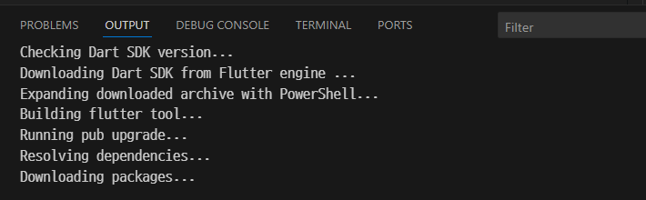

설치
환경
- 작성: 2025.08.28.
- windows 10
- visual studio code
visual studio에서의 작업
flutter 플러그인을 설치한다.

설치한 다음, plugin 창을 닫고, Ctrl + Shift + P를 눌러 명령 팔레트를 열고,
flutter doctor를 입력, Flutter: Run Flutter Doctor 를 실행한다.
flutter doctor이 개발환경을 점검하고 해야 할 일들을 알려준다.

오른쪽 아래에 이렇게 나왔다. flutter sdk를 설치하라고 한다. 만약 이미 flutter sdk를 가지고 있으면 locate SDK 버튼을 눌러주면 된다. 나는 아예 없으니 Download SDK를 눌러 다운로드부터 하겠다.
어느 폴더에 할 건지 위치를 물어보는데 C:\sdk 라고 하자. 자동으로 flutter 가 붙는다. 그래서 만약 C:\sdk\flutter라고 하면, C:\sdk\flutter\flutter가 된다.

자동으로 다운로드 받고,

뭔가 설치도 알아서 한다.
설치가 끝나면 path에 등록하겠냐고 물어본다. [Add SDK to PATH] 를 눌러준다.

설치가 끝난 줄 알았는데 이런 메시지가 또 나온다.(맨 위)
그래서 이번엔 [Locate SDK] 버튼을 눌러주고,

C:\sdk\flutter를 선택해 줬다.
그럼 또 flutter doctor가 뭔가 일을 하고, 끝난 거 같다.
flutter 프로젝트 생성
Ctrl + Shift + P를 눌러준다. 그리고 flutter new project를 입력하고 선택하면,

뭘 만들건지 물어본다. 여기서 Application을 선택했다.

그럼 프로젝트 폴더를 물어본다.

프로젝트 이름을 물어본다. (일단 기본값 그대로 줬다)
그럼 이렇게 프로젝트가 생성된다.
flutter 프로젝트 실행
vscode의 오른쪽 아래를 보면 No Device라는 버튼이 있다. target이 정해져 있지 않다는 뜻이다.

이 버튼을 눌러서
타겟을 Windows로 정해보자.

다행히도 이렇게 잘 바뀌었다.
프로그램을 실행하려면 Run > Start Debugging을 하거나 F5키를 누른다.
잠시 후 디버거를 선택하라는데 CodeLLDB 옆에 suggested가 붙어 있으니 이걸로 하자.
suggested의 배신으로 이런 메시지를 받게 되었다. [OK] 버튼을 누르면

이런 환경설정으로 이동한다.
[Add Configuration] 버튼을 누르면,
이런 화면이 나오는데, 여기서 밑으로 스크롤을 내려준다.
우리는 새로 프로젝트를 실행하니 Dart: Launch를 해준다. 만약 기존에 돌고 있던 프로세스에 디버거를 붙이는 거면 attach를 선택해 준다.
launch.json파일을 저장하고 다시 F5키를 누르면 실행된다.
Error when reading 'D:\test\flutter\test001\flutter_application_1\bin\main.dart': No such file or directory.
Connecting to VM Service at ws://127.0.0.1:13918/eUbi-8rBx98=/ws
Exited (254).
그런데 이렇게 에러가 난다.
가만 보면 프로젝트명\bin\main.dart가 없다는데 여기 가봐도 저런 파일 없다. 이 문제는 flutter의 entry를 잘못 설정해 줘서 생긴 문제다.
.vscode/launch.json 파일을 열어서 수정해야 한다. 기본 entry는 lib/main.dart이다.
"program": "bin/main.dart"
이 부분을
"program": "lib/main.dart"
이렇게 고쳐주고 다시 F5 키를 누르면,
아래쪽 노란색으로 보이는 것처럼 윈도우 실행용 tool 들을 다운로드 받고 실행한다.
building에도 한참 걸린다.
다 끝난 거 같은데 아마 아무 것도 안 나타난다. 오른쪽 아래에 뭔가 또 선택하는 게 나왔었는데 금방 사라져서 못 봤다.
암튼 다시 F5키를 눌러보면,
이런 프로그램이 나타난다.
D:\test\flutter\test001\flutter_application_1\build\windows\x64\runner\Debug\ 에 실행파일 flutter_application_1.exe이 있고, 따로 실행해보면 실행 잘 된다.